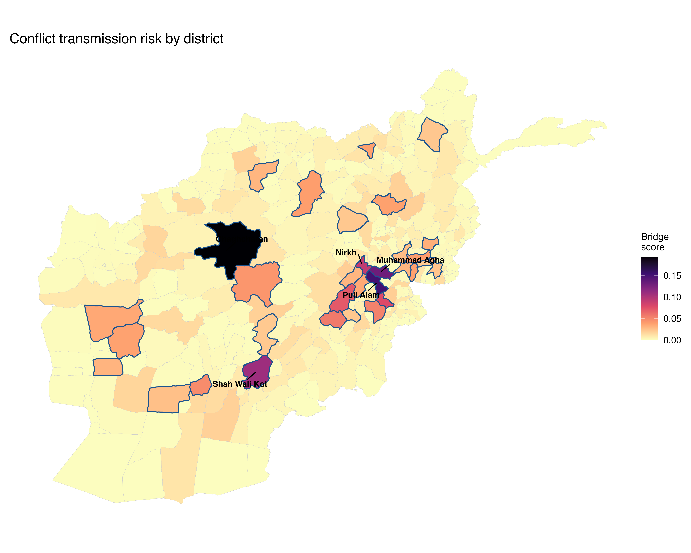
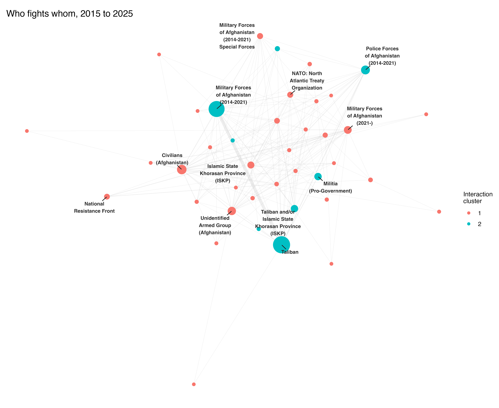

acled <- read_csv(acled_csv, show_col_types = FALSE) |>
rename_with(tolower) |>
mutate(event_date = parse_date_time(event_date, orders = c("dmy", "ymd", "mdy")),
year = year(event_date),
fatalities = suppressWarnings(as.numeric(fatalities))) |>
filter(country == country_name, year >= year_min, year <= year_max,
!is.na(latitude), !is.na(longitude))
districts <- st_read(districts_path, quiet = TRUE) |> st_make_valid()
dist_field <- intersect(c("NAME_2", "shapeName", "ADM2_EN"), names(districts))[1]
prov_field <- intersect(c("NAME_1", "ADM1_EN"), names(districts))[1]
districts <- districts |>
mutate(node_id = row_number(),
dist_name = as.character(.data[[dist_field]]),
prov_name = as.character(.data[[prov_field]]))title: “Conflict as a Network: Afghanistan, 2015-2025” subtitle: “Locating transmission-risk districts and conflict structure with network analysis” author: “Sajjad Sharifi” date: 2026-06-04 date-format: “MMMM D, YYYY” categories: [conflict, networks, FCV, Afghanistan] toc: true toc-depth: 2 code-fold: true code-tools: true fig-cap-location: bottom execute: warning: false message: false cache: true freeze: auto — —
This piece treats Afghanistan’s conflict from 2015 to 2025 as two networks built from 68,084 ACLED events. A district adjacency network locates the geographic corridors along which violence transmits between areas. An armed-actor co-event network shows who fights whom and how the conflict is organized. The argument is that fragility is partly a property of position in a network, not only a property of a place, which makes a district’s structural centrality an actionable risk signal rather than a descriptive footnote. The clearest result is a transmission belt on the southeastern approaches to Kabul, spanning Logar, Wardak, Paktya, and Ghazni, where high structural betweenness coincides with high event intensity.
NoteData access
ACLED and GADM both restrict redistribution, so the raw inputs are not committed to this repository. See data/README.md for how to obtain them. The figures and derived network-metric tables in outputs/ are published; the underlying event data are not.
Data and methods
The event data are ACLED records for Afghanistan, 2015 to 2025, all event types, joined to second-level administrative boundaries (districts) from GADM version 4.1. Events are matched to districts by point-in-polygon, which avoids the name-matching problems that arise when joining ACLED admin labels to a boundary file by string.
The spatial diffusion network links districts that share a border (queen contiguity). Betweenness centrality on this graph measures how often a district sits on the shortest path between other districts, which is a proxy for its role as a transmission corridor. Because betweenness on a contiguity graph partly reflects geographic size and centrality, the reported bridge score multiplies rescaled betweenness by rescaled event count, so a district scores high only when it is both structurally central and conflict-active.
events_sf <- st_as_sf(acled, coords = c("longitude", "latitude"), crs = 4326) |>
st_transform(st_crs(districts)) |>
st_join(districts[, "node_id"], join = st_within)although coordinates are longitude/latitude, st_within assumes that they are
planarintensity <- events_sf |> st_drop_geometry() |> filter(!is.na(node_id)) |>
count(node_id, name = "events")
districts <- districts |> left_join(intensity, by = "node_id") |>
mutate(events = replace_na(events, 0L))
nb <- poly2nb(districts, queen = TRUE)although coordinates are longitude/latitude, st_intersects assumes that they
are planaradj <- nb2mat(nb, style = "B", zero.policy = TRUE)
rownames(adj) <- colnames(adj) <- as.character(districts$node_id)
g_adj <- graph_from_adjacency_matrix(adj, mode = "undirected", diag = FALSE)
districts$betweenness <- betweenness(g_adj, normalized = TRUE)[
match(as.character(districts$node_id), V(g_adj)$name)]
districts <- districts |>
mutate(bridge_risk = rescale01(betweenness) * rescale01(events),
bridge_flag = bridge_risk >= quantile(bridge_risk, 0.90) & bridge_risk > 0)The armed-actor network is built from ACLED actor1 and actor2, with an edge weight equal to the number of shared events. Communities are detected with the Louvain method and actors are ranked by eigenvector centrality.
edges <- acled |>
transmute(actor1 = str_trim(actor1), actor2 = str_trim(actor2)) |>
filter(!is.na(actor1), !is.na(actor2), actor1 != "", actor2 != "", actor1 != actor2) |>
count(actor1, actor2, name = "weight")
g_act <- graph_from_data_frame(edges, directed = FALSE) |>
simplify(edge.attr.comb = list(weight = "sum"))
comm <- cluster_louvain(g_act, weights = E(g_act)$weight)
actor_metrics <- tibble(
actor = V(g_act)$name,
cluster = as.integer(membership(comm)),
events = strength(g_act, weights = E(g_act)$weight),
eigen = eigen_centrality(g_act, weights = E(g_act)$weight)$vector) |>
arrange(desc(eigen))Findings
A transmission belt on the approaches to Kabul
The highest bridge scores form a contiguous belt across Logar, Wardak, Paktya, and Ghazni, the historical insurgent approach corridors to the capital. Chaghcharan in Ghor ranks at the top largely because Ghor is a large, centrally located province with many neighbors, the geographic-centrality effect the composite score is designed to temper but does not fully remove.
top5 <- districts |> arrange(desc(bridge_risk)) |> slice_head(n = 5) |> st_point_on_surface()Warning: st_point_on_surface assumes attributes are constant over geometriesWarning in st_point_on_surface.sfc(st_geometry(x)): st_point_on_surface may not
give correct results for longitude/latitude datatop5_xy <- cbind(dist_name = top5$dist_name, as.data.frame(st_coordinates(top5)))
ggplot(districts) +
geom_sf(aes(fill = bridge_risk), color = "grey80", linewidth = 0.08) +
geom_sf(data = filter(districts, bridge_flag), fill = NA, color = accent, linewidth = 0.5) +
geom_text_repel(data = top5_xy, aes(X, Y, label = dist_name), inherit.aes = FALSE,
size = 3, fontface = "bold", min.segment.length = 0, box.padding = 0.6) +
scale_fill_viridis_c(option = "magma", direction = -1, name = "Bridge\nscore") +
labs(title = "Conflict transmission risk by district") +
theme_fragility()
districts |> st_drop_geometry() |> arrange(desc(bridge_risk)) |>
transmute(District = dist_name, Province = prov_name, Events = events,
Betweenness = round(betweenness, 3), `Bridge score` = round(bridge_risk, 3)) |>
head(10) |> knitr::kable()| District | Province | Events | Betweenness | Bridge score |
|---|---|---|---|---|
| Chaghcharan | Ghor | 532 | 0.169 | 0.192 |
| Puli Alam | Logar | 935 | 0.076 | 0.151 |
| Muhammad Agha | Logar | 476 | 0.129 | 0.131 |
| Shah Wali Kot | Kandahar | 751 | 0.067 | 0.108 |
| Nirkh | Wardak | 302 | 0.142 | 0.091 |
| Gardez | Paktya | 730 | 0.049 | 0.077 |
| Jaghatu | Ghazni | 538 | 0.061 | 0.070 |
| Qarabagh | Ghazni | 582 | 0.045 | 0.056 |
| Zurmat | Paktya | 418 | 0.059 | 0.052 |
| Nahri Sarraj | Hilmand | 1727 | 0.013 | 0.048 |
One dominant dyad
The actor network is organized around a single dense dyad, the Taliban and the Military Forces of Afghanistan, which together account for the overwhelming majority of engagements and sit at the center of the layout. Every other actor orbits this core. This concentration is the substantive story, and it is why eigenvector centrality is near 1.0 for those two actors and small for everyone else.
top_actors <- actor_metrics |> slice_max(events, n = 40) |> pull(actor)
g_top <- induced_subgraph(g_act, vids = which(V(g_act)$name %in% top_actors))
V(g_top)$cluster <- as.factor(as.integer(membership(comm)[V(g_top)$name]))
V(g_top)$str <- strength(g_top, weights = E(g_top)$weight)
lab_actors <- actor_metrics |> slice_max(events, n = 12) |> pull(actor)
V(g_top)$lab <- ifelse(V(g_top)$name %in% lab_actors, str_wrap(V(g_top)$name, 18), "")
set.seed(42)
ggraph(as_tbl_graph(g_top), layout = "stress") +
geom_edge_link(aes(width = weight), alpha = 0.15, color = "grey55") +
geom_node_point(aes(color = cluster, size = str)) +
geom_node_text(aes(label = lab), repel = TRUE, size = 2.8, fontface = "bold",
color = "grey15", box.padding = 0.5, max.overlaps = Inf, seed = 42) +
scale_edge_width(range = c(0.2, 2.2), guide = "none") +
scale_size(range = c(2, 12), guide = "none") +
scale_color_discrete(name = "Interaction\ncluster") +
labs(title = "Who fights whom, 2015 to 2025") +
theme_fragility()
actor_metrics |>
transmute(Actor = actor, Cluster = cluster, Events = events,
Eigenvector = round(eigen, 3)) |>
head(10) |> knitr::kable()| Actor | Cluster | Events | Eigenvector |
|---|---|---|---|
| Taliban | 2 | 46241 | 1.000 |
| Military Forces of Afghanistan (2014-2021) | 2 | 38795 | 0.983 |
| Police Forces of Afghanistan (2014-2021) | 2 | 6988 | 0.182 |
| Militia (Pro-Government) | 2 | 3533 | 0.103 |
| Taliban and/or Islamic State Khorasan Province (ISKP) | 2 | 3464 | 0.100 |
| Civilians (Afghanistan) | 1 | 8843 | 0.090 |
| Unidentified Armed Group (Afghanistan) | 1 | 5602 | 0.048 |
| Islamic State Khorasan Province (ISKP) | 1 | 2868 | 0.042 |
| Military Forces of Afghanistan (2014-2021) Special Forces | 1 | 1463 | 0.033 |
| Police Forces of Afghanistan (2014-2021) National Directorate of Security | 1 | 1102 | 0.026 |
Limitations
Four caveats bound the reading of these results.
Adjacency betweenness carries a geographic bias. Large, centrally located districts score high on betweenness regardless of conflict, which is why the composite multiplies by event intensity. A stronger version would build the network from the road system rather than shared borders, so bridges reflect actual movement corridors. That is the planned next iteration.
The Louvain communities are interaction clusters, not alliances. In a who-fights-whom network the two forces that fight each other most become densely linked, so the Taliban and the Afghan Military fall in the same cluster. This should not be read as a coalition. Recovering alliance or bloc structure would require the associate-actor fields or a signed network.
Civilians appear as a node because ACLED records them as the second actor in one-sided violence. The network here is therefore an interaction network that includes victimization, not a pure combatant network. Both framings are valid but they change what centrality means.
The analysis is static. It aggregates eleven years into one snapshot and does not model the time-ordered spread of violence. A temporal diffusion layer would turn “this district is a structural bridge” into “violence propagated along these edges in a given year.”
Reproducibility
The full pipeline is contained in this document. The raw ACLED export and GADM boundaries are not redistributed here; data/README.md gives the exact filters and download steps to reproduce the inputs. Package versions are recorded below, and the project uses renv for a locked environment.
sessionInfo()R version 4.6.0 (2026-04-24)
Platform: aarch64-apple-darwin25.4.0
Running under: macOS Tahoe 26.5.1
Matrix products: default
BLAS: /opt/homebrew/Cellar/openblas/0.3.33/lib/libopenblasp-r0.3.33.dylib
LAPACK: /opt/homebrew/Cellar/r/4.6.0/lib/R/lib/libRlapack.dylib; LAPACK version 3.12.1
locale:
[1] en_US.UTF-8/en_US.UTF-8/en_US.UTF-8/C/en_US.UTF-8/en_US.UTF-8
time zone: America/New_York
tzcode source: internal
attached base packages:
[1] stats graphics grDevices utils datasets methods base
other attached packages:
[1] ggrepel_0.9.8 scales_1.4.0 lubridate_1.9.5 stringr_1.6.0
[5] readr_2.2.0 tidyr_1.3.2 dplyr_1.2.1 graphlayouts_1.2.3
[9] ggraph_2.2.2 ggplot2_4.0.3 tidygraph_1.3.1 igraph_2.3.2
[13] spdep_1.4-2 spData_2.3.5 sf_1.1-1
loaded via a namespace (and not attached):
[1] gtable_0.3.6 xfun_0.57 lattice_0.22-9 tzdb_0.5.0
[5] vctrs_0.7.3 tools_4.6.0 generics_0.1.4 parallel_4.6.0
[9] tibble_3.3.1 proxy_0.4-29 pkgconfig_2.0.3 KernSmooth_2.23-26
[13] RColorBrewer_1.1-3 S7_0.2.2 lifecycle_1.0.5 compiler_4.6.0
[17] farver_2.1.2 deldir_2.0-4 textshaping_1.0.5 ggforce_0.5.0
[21] htmltools_0.5.9 class_7.3-23 yaml_2.3.12 crayon_1.5.3
[25] pillar_1.11.1 MASS_7.3-65 classInt_0.4-11 cachem_1.1.0
[29] wk_0.9.5 viridis_0.6.5 boot_1.3-32 tidyselect_1.2.1
[33] digest_0.6.39 stringi_1.8.7 purrr_1.2.2 labeling_0.4.3
[37] polyclip_1.10-7 fastmap_1.2.0 grid_4.6.0 cli_3.6.6
[41] magrittr_2.0.5 e1071_1.7-17 withr_3.0.2 bit64_4.8.2
[45] sp_2.2-1 timechange_0.4.0 rmarkdown_2.31 bit_4.6.0
[49] gridExtra_2.3 ragg_1.5.2 hms_1.1.4 memoise_2.0.1
[53] evaluate_1.0.5 knitr_1.51 viridisLite_0.4.3 s2_1.1.11
[57] rlang_1.2.0 Rcpp_1.1.1-1.1 glue_1.8.1 DBI_1.3.0
[61] tweenr_2.0.3 vroom_1.7.1 jsonlite_2.0.0 R6_2.6.1
[65] systemfonts_1.3.2 units_1.0-1 Citations
ACLED. Armed Conflict Location & Event Data Project. Data for Afghanistan, 2015 to 2025, all event types, accessed 2026-06-04. acleddata.com. Raleigh, C., Linke, A., Hegre, H., and Karlsen, J. (2010). Introducing ACLED: An Armed Conflict Location and Event Dataset. Journal of Peace Research, 47(5), 651 to 660.
GADM. Database of Global Administrative Areas, version 4.1. gadm.org.